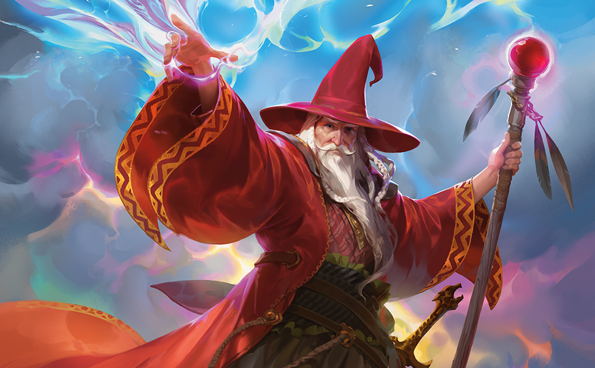

Elminster Aumar était jadis l'un des plus puissants magiciens de
Faerûn, et le plus puissant Élu de Mystra. Il a affronté le
Zhentarim, les Magiciens Rouges de Thay et une bonne centaine de
rivaux.
Il a également formé de nombreux apprentis qui devinrent tous de
prestigieux lanceurs de sorts.

Elminster Aumar
Le Sage de Valombre, le Vieux sage
Even the waves of fate can break upon the shores of will.